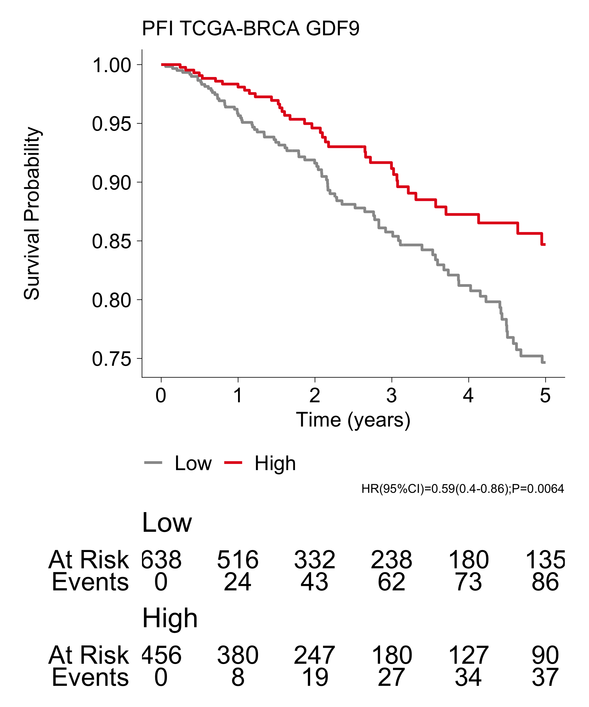

Last updated: 2025-10-31
Checks: 7 0
Knit directory: saini-stealTHY/
This reproducible R Markdown analysis was created with workflowr (version 1.7.1). The Checks tab describes the reproducibility checks that were applied when the results were created. The Past versions tab lists the development history.
Great! Since the R Markdown file has been committed to the Git repository, you know the exact version of the code that produced these results.
Great job! The global environment was empty. Objects defined in the global environment can affect the analysis in your R Markdown file in unknown ways. For reproduciblity it’s best to always run the code in an empty environment.
The command set.seed(20240517) was run prior to running
the code in the R Markdown file. Setting a seed ensures that any results
that rely on randomness, e.g. subsampling or permutations, are
reproducible.
Great job! Recording the operating system, R version, and package versions is critical for reproducibility.
Nice! There were no cached chunks for this analysis, so you can be confident that you successfully produced the results during this run.
Great job! Using relative paths to the files within your workflowr project makes it easier to run your code on other machines.
Great! You are using Git for version control. Tracking code development and connecting the code version to the results is critical for reproducibility.
The results in this page were generated with repository version 455fa91. See the Past versions tab to see a history of the changes made to the R Markdown and HTML files.
Note that you need to be careful to ensure that all relevant files for
the analysis have been committed to Git prior to generating the results
(you can use wflow_publish or
wflow_git_commit). workflowr only checks the R Markdown
file, but you know if there are other scripts or data files that it
depends on. Below is the status of the Git repository when the results
were generated:
Ignored files:
Ignored: .DS_Store
Ignored: .Rhistory
Ignored: .Rproj.user/
Ignored: analysis/.DS_Store
Ignored: analysis/templates/.DS_Store
Ignored: code/.DS_Store
Ignored: code/raw_data_processing/rnaseq/p27851_o32062/pipelines/
Ignored: configuration/.DS_Store
Ignored: data/.DS_Store
Ignored: data/crispr/
Ignored: data/resources/
Ignored: data/rnaseq/
Ignored: output/.DS_Store
Ignored: output/clinical/
Ignored: output/crispr/
Ignored: output/rnaseq/
Untracked files:
Untracked: analysis/crispr-hsapiens_2180_sgRNA.md
Untracked: analysis/crispr-mm_2215_sgRNA-CMT167-LLC1-CT26.md
Untracked: analysis/crispr-mm_2215_sgRNA-StealTHY.md
Untracked: analysis/crispr-mm_2215_sgRNA-clonality.md
Untracked: analysis/index.md
Untracked: analysis/rnaseq-amhr2_ko-deg.md
Untracked: analysis/rnaseq-tumor-bulk.md
Untracked: analysis/rnaseq-tumor-facs-cancer.md
Untracked: analysis/rnaseq-tumor-facs-immune.md
Untracked: analysis/style.css
Untracked: analysis/tcga_immune_infiltrate_amhr2_ko_signatures.md
Untracked: analysis/tcga_survival_amhr2_ko_signatures.md
Untracked: analysis/tcga_survival_crispr_hits_signatures.md
Untracked: code/R-functions/subchunkify.R
Unstaged changes:
Modified: .gitignore
Modified: analysis/_site.yml
Deleted: analysis/crispr-hsapiens_2180_sgRNA_r1.Rmd
Deleted: analysis/crispr-mm_2215_sgRNA-clonality_r1.Rmd
Deleted: analysis/crispr-mm_2215_sgRNA-r2oC.Rmd
Deleted: analysis/crispr-mm_2215_sgRNA-r2oD.Rmd
Deleted: analysis/crispr-mm_2215_sgRNA-r2oD_r1.Rmd
Deleted: analysis/templates/docs/figure/gse-dotplot-amhr2_ko_culture--over--amhr2_control_culture_GSEA_msigdb.h-1.pdf
Deleted: analysis/templates/docs/figure/gse-dotplot-amhr2_ko_culture--over--amhr2_control_culture_GSEA_msigdb.h-1.png
Deleted: analysis/templates/docs/figure/gse-dotplot-amhr2_ko_notgfbeta--over--amhr2_ko_culture_GSEA_msigdb.h-1.pdf
Deleted: analysis/templates/docs/figure/gse-dotplot-amhr2_ko_notgfbeta--over--amhr2_ko_culture_GSEA_msigdb.h-1.png
Deleted: analysis/templates/docs/figure/gse-dotplot-amhr2_overexpression--over--amhr2_control_culture_GSEA_msigdb.h-1.pdf
Deleted: analysis/templates/docs/figure/gse-dotplot-amhr2_overexpression--over--amhr2_control_culture_GSEA_msigdb.h-1.png
Deleted: analysis/templates/docs/figure/gse-dotplot-amhr2_overexpression--over--amhr2_ko_culture_GSEA_msigdb.h-1.pdf
Deleted: analysis/templates/docs/figure/gse-dotplot-amhr2_overexpression--over--amhr2_ko_culture_GSEA_msigdb.h-1.png
Deleted: analysis/templates/docs/figure/gse-dotplot-amhr2_overexpression--over--amhr2_ko_notgfbeta_GSEA_msigdb.h-1.pdf
Deleted: analysis/templates/docs/figure/gse-dotplot-amhr2_overexpression--over--amhr2_ko_notgfbeta_GSEA_msigdb.h-1.png
Deleted: analysis/templates/docs/figure/gse-dotplot-invivo_amhr2_ko-+-amhr2_ko_culture--over--invivo_control_sgrna-+-amhr2_control_culture_GSEA_msigdb.h-1.pdf
Deleted: analysis/templates/docs/figure/gse-dotplot-invivo_amhr2_ko-+-amhr2_ko_culture--over--invivo_control_sgrna-+-amhr2_control_culture_GSEA_msigdb.h-1.png
Deleted: analysis/templates/docs/figure/gse-dotplot-invivo_amhr2_ko--over--invivo_control_sgrna_GSEA_msigdb.h-1.pdf
Deleted: analysis/templates/docs/figure/gse-dotplot-invivo_amhr2_ko--over--invivo_control_sgrna_GSEA_msigdb.h-1.png
Deleted: analysis/templates/docs/file/tmp/dge.xlsx
Deleted: analysis/templates/docs/file/tmp/gse_gsea_msigdb.h.xlsx
Deleted: analysis/templates/docs/file/tmp/gse_gsego_bp.xlsx
Deleted: analysis/templates/docs/file/tmp/gse_gsego_mf.xlsx
Modified: analysis/templates/rnaseq-deg-edger.Rmd
Modified: code/R-functions/gse_report.r
Modified: configuration/rmarkdown/color_palettes.R
Modified: configuration/rmarkdown/ggplot_theme.R
Modified: update_workflowr.R
Note that any generated files, e.g. HTML, png, CSS, etc., are not included in this status report because it is ok for generated content to have uncommitted changes.
These are the previous versions of the repository in which changes were
made to the R Markdown
(analysis/tcga_survival_crispr_hits_genes.Rmd) and HTML
(docs/tcga_survival_crispr_hits_genes.html) files. If
you’ve configured a remote Git repository (see
?wflow_git_remote), click on the hyperlinks in the table
below to view the files as they were in that past version.
| File | Version | Author | Date | Message |
|---|---|---|---|---|
| Rmd | 455fa91 | Francesc Castro-Giner | 2025-10-31 | Prepare files for publication |
| html | 7190d2f | Francesc Castro-Giner | 2025-07-01 | Build site. |
| Rmd | 2d1b5a6 | Francesc Castro-Giner | 2025-07-01 | add tcga analysis |
Setup environment
knitr::opts_chunk$set(results='asis', echo=TRUE, message=FALSE, warning=FALSE, error=FALSE, fig.align = 'center', fig.width = 3.5, fig.asp = 0.618, dpi = 600, dev = c("png", "pdf"), engine.opts = list(bash = "-l"))
options(stringsAsFactors = FALSE)
use_seed <- 1100101
set.seed(use_seed)
dir.create(params$output_dir, recursive = TRUE, showWarnings = FALSE)Load packages
library(tidyverse)
library(knitr)
library(foreach)
library(SummarizedExperiment)
library(survival)
library(gtsummary)
library(ggsurvfit)
library(survminer)
library(meta)
library(magrittr)
library(kableExtra)
library(openxlsx)Load ggplot theme
Clean files generated in previous runs
selected_genes <- c('AMH','AMHR2', 'GDF9')
names(selected_genes)[names(selected_genes) == ""] <- selected_genes[names(selected_genes) == ""]
project_id <- list.files(
path = params$data_dir,
pattern = 'TCGA-[A-Z]+.rds$'
) %>%
gsub(".rds", "", .)
tcga_selected <- c('BRCA', 'LUAD', 'COAD') %>%
paste('TCGA', ., sep = '-')
project_id <- intersect(project_id, tcga_selected)
surv_endpoints <- list(
DSS = list(
time_var = 'DSS.time',
event_var = 'DSS'
),
DFI = list(
time_var = 'DFI.time',
event_var = 'DFI'
),
PFI = list(
time_var = 'PFI.time',
event_var = 'PFI'
)
)Load raw data. We set up the follow-up limit and configure survival variable. Remove studies with less than 3 events and 20 patients with survival data
i <- project_id[1]
data_se <- foreach(surv_i = surv_endpoints) %do% {
res <- foreach(i = project_id) %do% {
se <- readRDS(file.path(params$data_dir, paste0(i, '.rds')))
# Remove duplicated samples: https://ucsc-xena.gitbook.io/project/how-do-i/how-do-i-remove-duplicate-samples-from-a-km-plot
sample_annot <- colData(se) %>% data.frame %>%
filter(sample_type == 'Primary Tumor')
# Filter genes and samples
use_rows <- selected_genes[selected_genes %in% rownames(se)]
res <- se[use_rows, rownames(sample_annot)]
rownames(res) <- names(use_rows)
# Set survival variables and follow up limit
sample_annot <- colData(res) %>% data.frame()
sample_annot$status <- sample_annot[[surv_i$event_var]]
sample_annot$time <- sample_annot[[surv_i$time_var]]/365.25
sample_annot <- sample_annot %>%
mutate(
status = ifelse(time >= params$max_time_years, 0, status),
time = ifelse(time >= params$max_time_years, params$max_time_years, time)
)
colData(res) <- DataFrame(sample_annot)
# Number of events
n_surv_data <- sum(!is.na(res$status))
n_events <- sum(res$status, na.rm = TRUE)
if(ncol(res) > 0 & n_events >= params$min_event_n & n_surv_data >= params$min_surv_n) {
res
} else {
NULL
}
}
names(res) <- project_id
res
}
names(data_se) <- names(surv_endpoints)
# Remove NULL elements
data_se <- compact(data_se)
saveRDS(data_se, file = file.path(params$output_dir, 'data_se.rds'))Generate data using optimal cutoff point. Cutoff determined using the maximally selected rank statistics from the ‘maxstat’ R package. This is an outcome-oriented methods providing a value of a cutpoint that correspond to the most significant relation with outcome (here, survival).
i <- names(data_se)[12]
surv_maxstat <- foreach(surv_i = names(data_se), .combine = rbind) %do% {
res <- foreach(i = names(data_se[[surv_i]]), .combine = rbind) %do% {
se <- data_se[[surv_i]][[i]]
use_genes <- intersect(selected_genes, rownames(se))
gene_exp <- assay(se, 'logcounts') %>% t()
colnames(gene_exp) <- rowData(se)$gene_name
sample_annot <- colData(se) %>% data.frame()
# Keep only genes with expression in at least 10% of samples
gene_exp_prop <- colSums(gene_exp > 0) / nrow(gene_exp)
gene_exp <- gene_exp[,gene_exp_prop >= 0.1]
res_cut <- surv_cutpoint(cbind(sample_annot, gene_exp),
time = "time", event = "status",
variables = colnames(gene_exp))
res_cat <- surv_categorize(res_cut, labels = c('Low', 'High'))
sample_annot <- cbind(sample_annot, res_cat)
# Categorize risk variables
for(g in colnames(gene_exp)) {
sample_annot[[g]] <- factor(sample_annot[[g]], levels = c('Low', 'High'))
}
g <- colnames(gene_exp)[1]
foreach(g = colnames(gene_exp), .combine = rbind) %do% {
use_formula <- as.formula(paste0("Surv(time, status) ~ ", g))
cox.res <- coxph(use_formula, data = sample_annot) %>%
tbl_regression(exp = TRUE)
data.frame(
surv_var = surv_i,
project_id = i,
gene_name = g,
HR = cox.res$table_body$estimate[3],
p.value = cox.res$table_body$p.value[3],
std.error = cox.res$table_body$std.error[3],
conf.low = cox.res$table_body$conf.low[3],
conf.high = cox.res$table_body$conf.high[3],
n.low = sum(sample_annot[[g]] == "Low"),
n.high = sum(sample_annot[[g]] == "High")
)
}
}
res
}
saveRDS(surv_maxstat, file = file.path(params$output_dir, 'surv_maxstat.rds'))
survfit_km_maxstat <- foreach(surv_i = names(data_se)) %do% {
res <- foreach(i = names(data_se[[surv_i]])) %do% {
se <- data_se[[surv_i]][[i]]
use_genes <- intersect(selected_genes, rownames(se))
gene_exp <- assay(se, 'logcounts') %>% t()
colnames(gene_exp) <- rowData(se)$gene_name
sample_annot <- colData(se) %>% data.frame()
gene_exp_prop <- colSums(gene_exp > 0) / nrow(gene_exp)
gene_exp <- gene_exp[,gene_exp_prop >= 0.1]
res_cut <- surv_cutpoint(cbind(sample_annot, gene_exp),
time = "time", event = "status",
variables = colnames(gene_exp))
res_cat <- surv_categorize(res_cut, labels = c('Low', 'High'))
sample_annot <- cbind(sample_annot, res_cat)
# Categorize risk variables
for(g in colnames(gene_exp)) {
sample_annot[[g]] <- factor(sample_annot[[g]], levels = c('Low', 'High'))
}
g <- colnames(gene_exp)[1]
res_by_genes <- foreach(g = colnames(gene_exp)) %do% {
use_formula <- as.formula(paste0("Surv(time, status) ~ ", g))
# KM plot
survfit2(use_formula, data = sample_annot) %>%
ggsurvfit() +
add_risktable() +
labs(
x = "Time (years)",
title = i
) +
theme_project +
theme(legend.position="bottom")
}
names(res_by_genes) <- colnames(gene_exp)
res_by_genes
}
names(res) <- names(data_se[[surv_i]])
res
}
names(survfit_km_maxstat) <- names(data_se)
saveRDS(survfit_km_maxstat, file = file.path(params$output_dir, 'survfit_km_maxstat.rds'))Load survival data
data_se <- readRDS(file.path(params$output_dir, 'data_se.rds'))
surv_maxstat <- readRDS(file.path(params$output_dir, 'surv_maxstat.rds'))
survfit_km_maxstat_list <- readRDS(file.path(params$output_dir, 'survfit_km_maxstat.rds'))Run metanalysis for survival analysis
## Survival with maxstat
meta_surv_maxstat <- foreach(sv = names(surv_endpoints)) %do% {
res <- foreach(g = unique(surv_maxstat$gene_name)) %do% {
use_surv <- surv_maxstat %>% filter(gene_name == g & surv_var == sv)
metagen(
HR = log(use_surv$HR),
lower = log(use_surv$conf.low),
upper = log(use_surv$conf.high),
sm = "HR", common=F, random=T,
studlab = use_surv$project_id,
method.tau = "DL", ## method to calculate Tau
method.random.ci = "classic" ## method to calculate estimator's CI
)
}
names(res) <- unique(surv_maxstat$gene_name)
res
}
names(meta_surv_maxstat) <- names(surv_endpoints)
meta_surv_maxstat_summary <- foreach(sv = names(surv_endpoints), .combine = rbind) %do% {
foreach(g = unique(surv_maxstat$gene_name), .combine = rbind) %do% {
x <- summary(meta_surv_maxstat[[sv]][[g]])
data.frame(
surv_var = sv,
project_id = 'Summary',
gene_name = g,
HR = exp(x$random$TE),
p.value = x$random$p,
std.error = x$random$seTE,
conf.low = exp(x$random$lower),
conf.high = exp(x$random$upper)
)
}
}
meta_surv_maxstat_weight <- foreach(sv = names(surv_endpoints), .combine = rbind) %do% {
foreach(g = unique(surv_maxstat$gene_name), .combine = rbind) %do% {
x <- summary(meta_surv_maxstat[[sv]][[g]])
data.frame(
surv_var = sv,
project_id = x$studlab,
gene_name = g,
w.random = round(100*x$w.random / sum(x$w.random), 1)
)
}
}Forest plot of individual TCGA studies and pooled estimate from metanalysis, displaying HR (points) and 95%CI (lines) for the association between high expression of AMH or AMHR2 and defined clinical survival endpoints (indicated by symbols); the weight of each study is represented as percentage in the pooled effect size; BRCA, breast cancer; LUAD, lung adenocarcinoma; COAD, colon adenocarcinoma; Meta, metanalysis; HR, hazard ratio; CI, confidence interval.
use_genes <- c('AMH', 'AMHR2')
use_surv <- surv_maxstat %>%
filter(gene_name %in% use_genes)
use_meta_surv <- foreach(i = meta_surv_maxstat) %do% {
i[intersect(names(i), use_genes)]
} %>% set_names(names(meta_surv_maxstat))# File name summary
rmd_file <- current_input()
if(is.null(rmd_file))
rmd_file <- 'tmp'
file_xlsx <- file.path('./docs/file',rmd_file, 'amh_amhr2_surv_maxstat.xlsx')
dir.create(dirname(file_xlsx), recursive = TRUE, showWarnings = FALSE)
# Generate workbook
wb <- createWorkbook()
for(i in unique(use_surv$surv_var)) {
addWorksheet(wb, i)
res <- use_surv %>%
filter(surv_var == i) %>%
select(gene_name, everything())
res_meta <- foreach(g = unique(res$gene_name), .combine = rbind) %do% {
use_meta_sum <- summary(use_meta_surv[[i]][[g]])
data.frame(
project_id = 'Meta',
gene_name = g,
HR = exp(use_meta_sum$random$TE),
p.value = use_meta_sum$random$p,
std.error = use_meta_sum$random$seTE,
conf.low = exp(use_meta_sum$random$lower),
conf.high = exp(use_meta_sum$random$upper),
surv_var = i
)
}
res <- bind_rows(res, res_meta)
writeData(wb, i, res)
}
saveWorkbook(wb, file_xlsx, TRUE)
dge_file_xlsx <- file_xlsxYou can download the results of the survival analysis using the following link:
chunk_data <- use_surv
meta_weight <- foreach(i = names(use_meta_surv), .combine = rbind) %do% {
foreach(j = names(use_meta_surv[[i]]), .combine = rbind) %do% {
use_meta_sum <- summary(use_meta_surv[[i]][[j]])
data.frame(
surv_var = i,
gene_name = j,
project_id = use_meta_sum$studlab,
w.fixed = use_meta_sum$w.fixed,
w.pct = 100* use_meta_sum$w.fixed / sum(use_meta_sum$w.fixed)
)
}
}
# use_meta_sum <- summary(use_meta)
chunk_data %<>% left_join(meta_weight, by = c('surv_var', 'gene_name', 'project_id'))
cox_meta_add <- foreach(i = names(use_meta_surv), .combine = rbind) %do% {
foreach(g = names(use_meta_surv[[i]]), .combine = rbind) %do% {
use_meta_sum <- summary(use_meta_surv[[i]][[g]])
cox_meta <- data.frame(
project_id = 'Meta',
gene_name = g,
HR = exp(use_meta_sum$random$TE),
p.value = use_meta_sum$random$p,
std.error = use_meta_sum$random$seTE,
conf.low = exp(use_meta_sum$random$lower),
conf.high = exp(use_meta_sum$random$upper),
surv_var = i,
w.fixed = NA,
w.pct = 2*max(chunk_data %>% filter(gene_name == g) %>% pull(w.pct))
)
cox_empty <- data.frame(
project_id = '',
gene_name = g,
HR = NA,
p.value = 1,
std.error = 0,
conf.low = 1,
conf.high = 1,
surv_var = i,
w.fixed = NA,
w.pct = 0
)
rbind(cox_meta, cox_empty)
}
}
chunk_data %<>%
bind_rows(cox_meta_add) %>%
mutate(
project_id = factor(project_id, levels= c('Meta', '', rev(tcga_selected))),
project_type = ifelse(project_id == 'Meta', 'Meta', 'Project'),
FDR = p.adjust(p.value, method = 'BH'),
logP = -log10(p.value),
logP = ifelse(logP > 10, 10 , logP),
logFDR = -log10(FDR),
logFDR = ifelse(logFDR > 10, 10 , logFDR)
)shape_scale <- c(DSS = 16, DFI = 15, PFI = 0)
use_postition_dodge <- 0.8
use_lwd <- (1/2.141959)/4
chunk_data %>%
filter(surv_var %in% c('DSS', 'DFI')) %>%
filter(std.error <= 10) %>%
ggplot(aes(HR, project_id,
size = w.pct,
shape = surv_var
)
) +
geom_point(position = position_dodge(use_postition_dodge)) +
geom_linerange(aes(xmin=conf.low, xmax=conf.high),
linewidth = use_lwd,
show.legend = FALSE,
position = position_dodge(use_postition_dodge)
) +
geom_vline(xintercept = 1, linetype = 'dotted', linewidth = use_lwd) +
facet_grid(rows = vars(gene_name)) +
scale_shape_manual(values = shape_scale) +
scale_size_continuous(range = c(0.3, 1.4)) +
scale_x_continuous(trans = 'log2',
breaks = c(0.1, 0.2, 0.5, 1, 2, 4, 10),
labels = as.character(c(0.1, 0.2, 0.5, 1, 2, 4, 10))
) +
theme(
axis.line.y = element_blank(),
axis.ticks.y = element_blank(),
axis.line.x = element_line(linewidth = use_lwd),
axis.ticks.x = element_line(linewidth = use_lwd)
) +
theme_facet +
labs(
x = 'HR',
y = '',
shape = '',
size = 'Weight (%)',
caption = 'Estimates with a standard error > 10 were removed from the plot'
)
| Version | Author | Date |
|---|---|---|
| 7190d2f | Francesc Castro-Giner | 2025-07-01 |
Kaplan-Meier plots showing the risk calculated for defined clinical outcomes in the BRCA-TCGA patients cohort based on dichotomization for lower or higher expression of AMH or GDF9; disease-specific survival for AMH: HR (95%CI)=2.65, P=0.00015 by two-sided Cox proportional hazard r model; progression-free survival for AMH: HR (95%CI)=1.83, P=0.001 by two-sided Cox proportional hazard regression model; disease-free interval for AMH: HR (95%CI)=2.02, P=0.0032 by two-sided Cox proportional hazard model; disease-specific survival for GDF9: HR (95%CI)=0.53, P=0.024 by two-sided Cox proportional hazard model; progression-free survival for GDF9: HR (95%CI)=0.59, P=0.0064 by Cox proportional hazard model; disease-free interval for GDF9: HR (95%CI) undefined, P=1 by two-sided Cox proportional hazard model; BRCA, breast cancer; TCGA, The Cancer Genome Atlas; HR, hazard ratio; CI, confidence interval by Cox proportional hazard model.
use_survfit_km_full <- survfit_km_maxstat_list
km_projects_selection <- tcga_selected
km_gene_direction <- c(AMH = 'Down', GDF9 = 'Up')
km_gene_selection <- names(km_gene_direction)
i=survfit_km_maxstat_list[[1]]
use_survfit_km <- foreach(i = use_survfit_km_full) %do% {
i <- i[intersect(names(i), km_projects_selection)]
res <- foreach(j=i) %do% {
j <- j[intersect(names(j), km_gene_selection)]
j
}
names(res) <- names(i)
res
}
names(use_survfit_km) <- names(use_survfit_km_full)use_lwd <- (1/2.141959)/4
surv_var_i <- names(use_survfit_km)[1]
gene_i <- names(use_survfit_km[[1]][[1]])[1]
p_i <- names(use_survfit_km[[1]])[1]
for(surv_var_i in names(use_survfit_km)) {
cat("####", surv_var_i,"\n\n")
for(gene_i in km_gene_selection) {
cat("#####", surv_var_i,"-", gene_i, "\n\n")
for(p_i in 'TCGA-BRCA') {
top_color <- ifelse(km_gene_direction[[gene_i]] == 'Up',
'#e41a1c',
'#377eb8')
use_palette <- c(Low = 'grey60', High = top_color)
hr_p <- surv_maxstat %>%
filter(surv_var == surv_var_i) %>%
filter(project_id == p_i) %>%
filter(gene_name == gene_i)
cox_res <- paste0('HR(95%CI)=', round(hr_p$HR, 2),
'(', round(hr_p$conf.low,2),'-',round(hr_p$conf.high,2),')',
';P=',format.pval(hr_p$p.value,2))
res <- use_survfit_km[[surv_var_i]][[p_i]][[gene_i]] +
labs(
title = paste(surv_var_i, p_i, gene_i),
caption = cox_res
) +
scale_color_manual(values = use_palette) +
theme(
axis.line = element_line(linewidth = use_lwd),
axis.ticks = element_line(linewidth = use_lwd)
)
print(res)
cat("\n\n")
}
}
}
| Version | Author | Date |
|---|---|---|
| 7190d2f | Francesc Castro-Giner | 2025-07-01 |
R version 4.4.3 (2025-02-28) Platform: aarch64-apple-darwin20 Running under: macOS 26.0.1
Matrix products: default BLAS: /Library/Frameworks/R.framework/Versions/4.4-arm64/Resources/lib/libRblas.0.dylib LAPACK: /Library/Frameworks/R.framework/Versions/4.4-arm64/Resources/lib/libRlapack.dylib; LAPACK version 3.12.0
locale: [1] en_US.UTF-8/en_US.UTF-8/en_US.UTF-8/C/en_US.UTF-8/en_US.UTF-8
time zone: Europe/Zurich tzcode source: internal
attached base packages: [1] stats4 stats graphics grDevices utils
datasets methods
[8] base
other attached packages: [1] cowplot_1.2.0 openxlsx_4.2.8
[3] kableExtra_1.4.0 magrittr_2.0.3
[5] meta_8.2-0 metadat_1.4-0
[7] survminer_0.5.0 ggpubr_0.6.1
[9] ggsurvfit_1.1.0 gtsummary_2.3.0
[11] survival_3.8-3 SummarizedExperiment_1.36.0 [13] Biobase_2.66.0
GenomicRanges_1.58.0
[15] GenomeInfoDb_1.42.3 IRanges_2.40.1
[17] S4Vectors_0.44.0 BiocGenerics_0.52.0
[19] MatrixGenerics_1.18.1 matrixStats_1.5.0
[21] foreach_1.5.2 knitr_1.50
[23] lubridate_1.9.4 forcats_1.0.0
[25] stringr_1.5.1 dplyr_1.1.4
[27] purrr_1.1.0 readr_2.1.5
[29] tidyr_1.3.1 tibble_3.3.0
[31] ggplot2_3.5.2 tidyverse_2.0.0
[33] workflowr_1.7.1
loaded via a namespace (and not attached): [1] mathjaxr_1.8-0
RColorBrewer_1.1-3 rstudioapi_0.17.1
[4] jsonlite_2.0.0 farver_2.1.2 nloptr_2.2.1
[7] rmarkdown_2.29 fs_1.6.6 zlibbioc_1.52.0
[10] vctrs_0.6.5 minqa_1.2.8 CompQuadForm_1.4.4
[13] rstatix_0.7.2 htmltools_0.5.8.1 S4Arrays_1.6.0
[16] broom_1.0.9 SparseArray_1.6.2 Formula_1.2-5
[19] sass_0.4.10 bslib_0.9.0 zoo_1.8-14
[22] cachem_1.1.0 whisker_0.4.1 lifecycle_1.0.4
[25] iterators_1.0.14 pkgconfig_2.0.3 Matrix_1.7-3
[28] R6_2.6.1 fastmap_1.2.0 GenomeInfoDbData_1.2.13 [31] rbibutils_2.3
digest_0.6.37 numDeriv_2016.8-1.1
[34] patchwork_1.3.1 ps_1.9.1 rprojroot_2.1.0
[37] textshaping_1.0.1 labeling_0.4.3 km.ci_0.5-6
[40] timechange_0.3.0 httr_1.4.7 abind_1.4-8
[43] compiler_4.4.3 withr_3.0.2 backports_1.5.0
[46] metafor_4.8-0 carData_3.0-5 ggsignif_0.6.4
[49] MASS_7.3-65 DelayedArray_0.32.0 tools_4.4.3
[52] zip_2.3.3 httpuv_1.6.16 glue_1.8.0
[55] callr_3.7.6 nlme_3.1-168 promises_1.3.3
[58] grid_4.4.3 getPass_0.2-4 generics_0.1.4
[61] gtable_0.3.6 tzdb_0.5.0 KMsurv_0.1-6
[64] data.table_1.17.8 hms_1.1.3 xml2_1.3.8
[67] car_3.1-3 XVector_0.46.0 pillar_1.11.0
[70] later_1.4.4 splines_4.4.3 lattice_0.22-7
[73] tidyselect_1.2.1 git2r_0.36.2 reformulas_0.4.1
[76] gridExtra_2.3 svglite_2.2.1 xfun_0.53
[79] stringi_1.8.7 UCSC.utils_1.2.0 yaml_2.3.10
[82] boot_1.3-31 evaluate_1.0.5 codetools_0.2-20
[85] cli_3.6.5 xtable_1.8-4 systemfonts_1.2.3
[88] Rdpack_2.6.4 processx_3.8.6 jquerylib_0.1.4
[91] survMisc_0.5.6 dichromat_2.0-0.1 Rcpp_1.1.0
[94] lme4_1.1-37 viridisLite_0.4.2 scales_1.4.0
[97] crayon_1.5.3 rlang_1.1.6